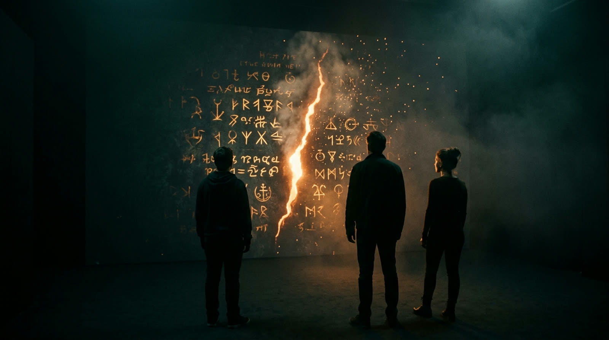
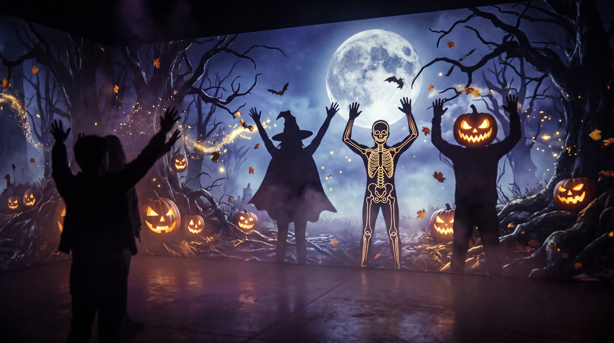
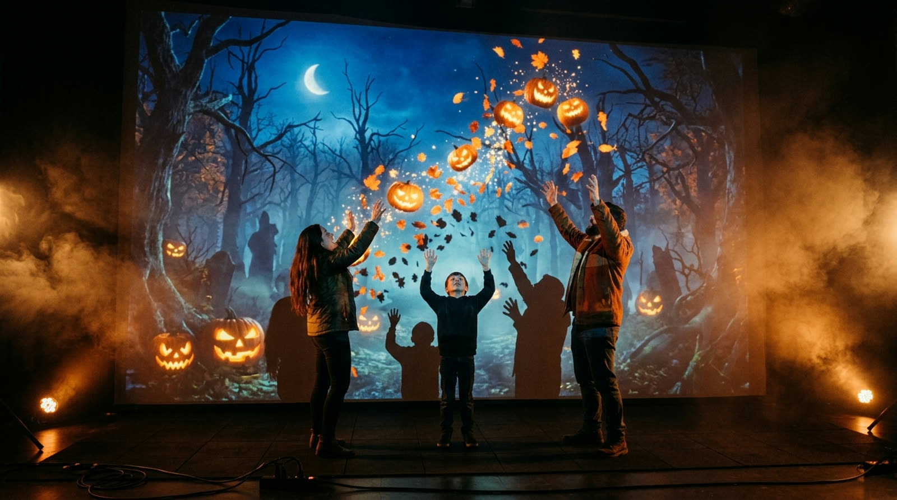
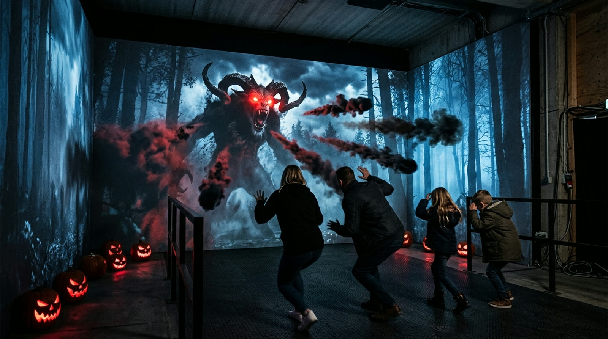
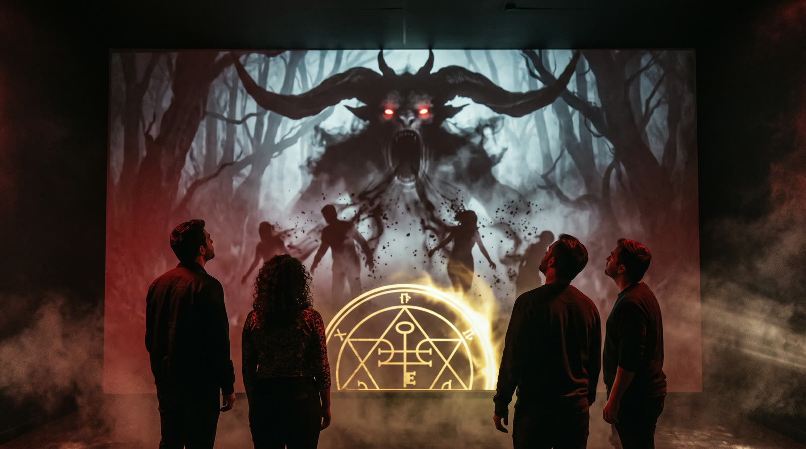
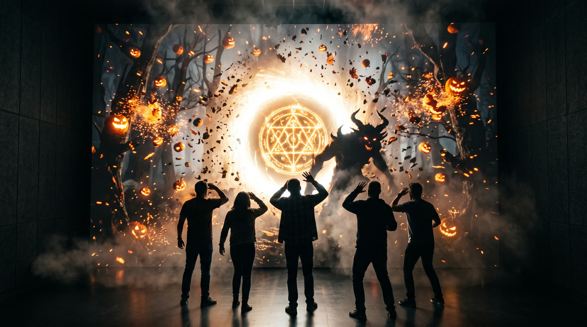

El Umbral
The Threshold
An AI wall that answers the body.
At Plaza Camino Al Mar in Mazatlán, ANDATA LAB built a real-time wall where whoever walks in becomes part of the image — body tracking, generative visuals and a Halloween room the mall could film.
A mall that needed a night people would stay for.
Plaza Camino Al Mar asked ANDATA LAB for a Halloween destination — not a looping video on a wall, but a room where whoever walked in changed what was on screen.
The brief was a public venue, a seasonal window in Mazatlán, and an audience that would film it. The wall had to read the body instantly, run without an operator in every cycle, and hold a queue of mall visitors — families, teens, people in costume.
Season window: 24 Oct – 2 Nov 2026. Room / wall size: 8 × 5 m room · 6.5 m projection wall.
Who enters becomes part of the show.
The 48-second piece we send to venues — English or Spanish, with sound. Click to open it.
Step in. The wall already has you.
A dark room, a wide projection, a figure in the image that is you. Particles, generated bodies and 3D objects move with the public. A skeleton waits at the edge of the light.
Camera study, Plaza Camino Al Mar.
The wall in the mall — bodies in the field, the room holding a queue, the picture answering whoever stands in it.
What the wall can look like.
Frames from the Halloween language — portal, forest, creature, the moment the picture breaks. Generated live in the same engine.






Camera, body, engine, wall.


Body tracking
A depth / camera read of the people in front of the wall. No facial recognition. The silhouette is enough — pose, motion, how many bodies are in the field.
Real-time engine
TouchDesigner maps that signal into visuals that never wait on a render. If the sensor drops, the show still runs — the picture does not go black.
Generative AI wall
Live image generation sits on the same engine, so the figure on the wall can look back at the visitor without a pre-rendered loop.
Show control
A cycle the mall can run through a night: wait state, start, interaction window, close. Content can be swapped for another event without rebuilding the room.
Built to be entered, not watched.
The same wall, another night.
El Umbral is a Halloween room in a mall. The system underneath is a surface, a camera and a live engine — which is what a plaza, a trade venue or a brand activation needs when the content has to change and the public has to be in the picture.
We design the interaction, the engine and the install. You bring the space, the calendar and the audience. If you have a wall and a night, we can tell you what the room needs.
ANDATA LAB in the room.
- Studio
- Andata Lab
- Client
- Plaza Camino Al Mar
- Location
- Mazatlán, MX
- Role
- Interactive system · body tracking · real-time visuals · show control
- Engineering
- TouchDesigner · camera tracking · generative AI
- Additional credits
- On-site operations · Plaza Camino Al Mar
Interactive walls for malls, plazas and events
Can you put an interactive AI wall in a mall or plaza?
Yes. El Umbral ran at Plaza Camino Al Mar in Mazatlán. The same stack — camera, TouchDesigner, a projection or LED surface — can live in a mall, a trade venue or a brand room. Send the space and the dates.
Does the system use facial recognition?
No. El Umbral reads the body as a silhouette — pose and motion. We do not run facial recognition on this system.
Can the content change for another event?
Yes. The wall is an engine, not a single film. Halloween was the first public night. The same room can carry another story if the brief, the calendar and the surface allow it.
How long does an install like this take?
It depends on the room, the throw, the sensor position and whether the surface already exists. El Umbral was three days on site. Tell us the space and we will say what the calendar needs.
Have a wall the public should be able to enter?
We design interactive installations and real-time AI walls for malls, plazas, museums and brand nights. Tell us about the space.
Start a project →